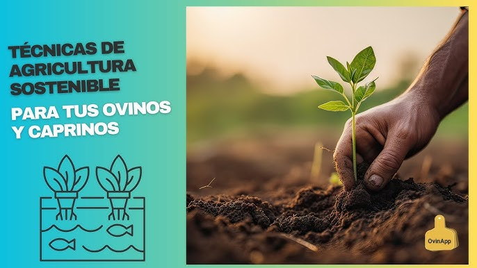
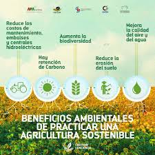

Metodología de Capacitación
Nuestro Enfoque
Nuestro programa de capacitación combina teoría y práctica, utilizando métodos innovadores para asegurar un aprendizaje efectivo y aplicable.
Galería de Técnicas de Capacitación


